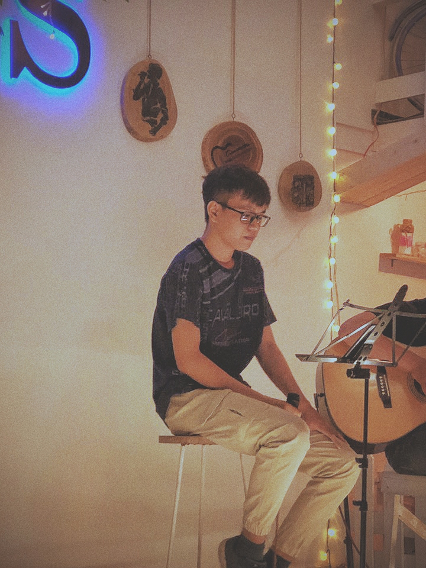

Norsmither là ai?
Xin chào, cảm ơn bạn đã đọc này. Mình là Khanh, cũng là Norsmither, mình lập trang web này để giới thiệu bản thân, để các bạn biết mình thực sự là ai và mình đang làm gì.
Về cơ bản, Mình chỉ là một người bình thường với suy nghĩ đơn giản trong một thế giới phức tạp và một niềm đam mê cháy bỏng, đó là âm nhạc.
Chào mừng đến với thế giới của tôi, bạn của tôi.
Tại sao lại là "Norsmither"?
Thực tế, ý nghĩa ban đầu của cái tên "Norsmither" là "Normal Smith". "Normal" ngụ ý rằng mình chỉ là một người bình thường, không có gì đặc biệt, và "Smith" là tên của một người mà mình rất ngưỡng mộ tên là Jaden Smith. Do đó, cái tên "Norsmither" đã ra đời.
Mình rất yêu thích cái tên này và nó đến với mình như một sự sắp đặt. Bạn của mình bảo rằng mình nên tìm một cái tên ý nghĩa và đặc biệt. Bây giờ mình đã có một cái tên không thể ý nghĩa và đặc biệt hơn, đối với mình cái tên này đã rất tuyệt vời rồi, mình cảm thấy tự tin.
Công việc - IT

Vâng, đúng vậy, công việc của mình là lập trình. Thành thật mà nói, mình không thực sự thích công việc này mặc dù mình sẽ tốt nghiệp trong năm tới kể từ khi mình viết bài này (haha).
Bởi vì mình không thực sự thích công việc này, điều đó có nghĩa là việc học lập trình rất khó khăn đối với bản thân. Mình đã đổ rất nhiều tiền vào việc học chỉ để thu nạp kiến thức. Sau tất cả, mình không muốn từ bỏ một lần nữa. Bây giờ mình thích thử thách này. Mình theo đuổi lập trình không phải vì đam mê mà vì thử thách.
Đam mê

Mình phải thừa nhận rằng mình thực sự yêu âm nhạc mặc dù đó không phải là công việc hàng ngày. Chắc hẳn sẽ có người hỏi tại sao mình không chọn âm nhạc là công việc hàng ngày? Thực ra, có rất nhiều câu trả lời cho câu hỏi đó, nhưng từ những gì mình đang trải qua, câu trả lời duy nhất là: Mình không muốn bị gò bó trong một công việc hàng ngày mà mình phải làm. Mình muốn tự do - tự do tưởng tượng - tự do thời gian - tự do theo cách mình muốn.
Từ đây mọi người sẽ có thể nhận ra hai điểm khác biệt ở mình. Nếu Tấn Khanh là người của công việc lập trình hàng ngày, thì Norsmither là người của âm nhạc, và mình thích điều đó vì mình được sống với hai cá tính khác nhau.